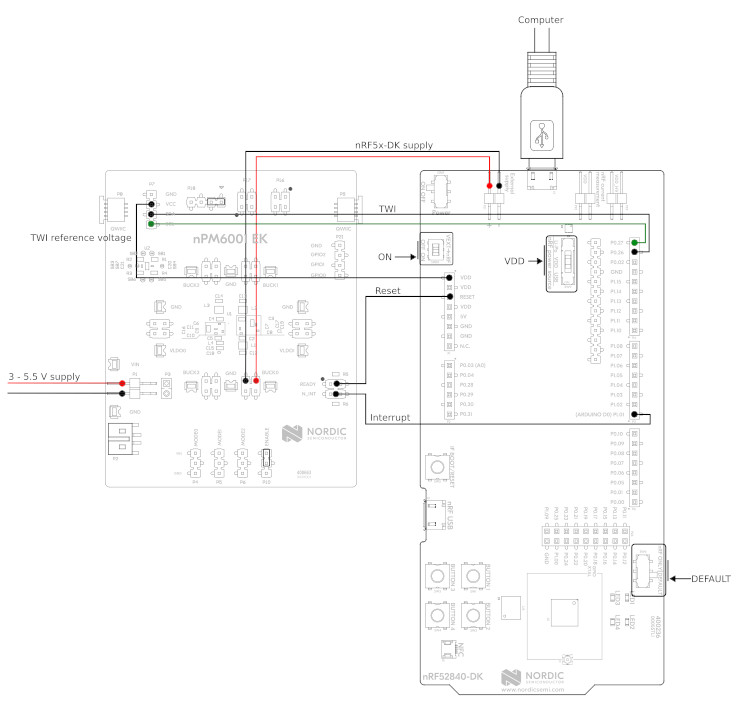

nPM6001 EK
Overview
This sample is provided as an example to test the nPM6001 EK. The sample provides a shell interface that allows to test multiple functionalities offered by the nPM6001 PMIC, including:
Regulators (BUCK0/1/2/3 and LDO0/1)
GPIO
Watchdog
Requirements
The shield needs to be wired to a host board supporting the Arduino connector. Below you can find a wiring example for the nRF52840 DK:

nRF52840DK + nPM6001-EK wiring example
Building and Running
The sample is designed so that it can run on any platform. For example, when building for the nRF52840 DK, the following command can be used:
west build -b nrf52840dk/nrf52840 samples/shields/npm6001_ek
Note that this sample automatically sets SHIELD to npm6001_ek. Once
flashed, you should boot into the shell interface. The npm6001 command is
provided to test the PMIC. Below you can find details for each subcommand.
Regulators
The npm6001 shell interface provides the regulator subcommand to test
the regulators embedded in the PMIC (BUCK0/1/2/3 and LDO0/1). Below you can
find some command examples.
# list all the available regulators
npm6001 regulator list
BUCK0
BUCK1
BUCK2
BUCK3
LDO0
LDO1
# list all the supported voltages by BUCK2
npm6001 regulator voltages BUCK2
1200 mV
1250 mV
1300 mV
1350 mV
1400 mV
# enable BUCK3
npm6001 regulator enable BUCK3
# disable BUCK3
npm6001 regulator disable BUCK3
# set BUCK3 voltage to exactly 3000 mV
npm6001 regulator set BUCK3 3000
# obtain the actual BUCK3 configured voltage
npm6001 regulator get BUCK3
3000 mV
# set BUCK0 voltage to a value between 2350 mV and 2450 mV
npm6001 regulator set BUCK0 2350 2450
# obtain the actual BUCK0 configured voltage
npm6001 regulator get BUCK3
2400 mV
# set BUCK0 to hysteretic mode
npm6001 regulator modeset BUCK0 hys
# set BUCK0 to PWM mode
npm6001 regulator modeset BUCK0 pwm
# get BUCK0 mode
npm6001 regulator modeget BUCK0
Hysteretic
# get active errors on BUCK0
npm6001 regulator errors BUCK0
Overcurrent: [ ]
Overtemp.: [ ]
GPIO
The npm6001 shell interface provides the gpio subcommand to test the
GPIO functionality offered by the PMIC. Below you can find some command
examples.
# configure GPIO 0 as output
npm6001 gpio configure -p 0 -d out
# configure GPIO 0 as output (init high)
npm6001 gpio configure -p 0 -d outh
# configure GPIO 0 as output (init low)
npm6001 gpio configure -p 0 -d outl
# configure GPIO 0 as output with high-drive mode enabled
npm6001 gpio configure -p 0 -d out --high-drive
# configure GPIO 1 as input
npm6001 gpio configure -p 1 -d input
# configure GPIO 1 as input with pull-down enabled
npm6001 gpio configure -p 1 -d input --pull-down
# configure GPIO 1 as input with CMOS mode enabled
npm6001 gpio configure -p 1 -d input --cmos
# get GPIO 1 level
npm6001 gpio get 1
# set GPIO 0 high
npm6001 gpio set 0 1
# set GPIO 0 low
npm6001 gpio set 0 0
# toggle GPIO 0
npm6001 gpio toggle 0
Watchdog
The npm6001 shell interface provides the wdt subcommand to test the
Watchdog functionality offered by the PMIC. Below you can find some command
examples.
# enable watchdog, timeout set to 8 seconds. Timeout will be rounded up to
# the resolution of the watchdog, e.g. 10s -> 12s.
npm6001 wdt enable 8000
# disable watchdog
npm6001 wdt disable
# kick/feed watchdog
npm6001 wdt kick
Note
When the watchdog reset pin is connected to your board reset, you will see how Zephyr reboots after the watchdog timeout expires.